Design contract
The values and rules every ergonoi interface follows: colours, type, spacing, lines, controls and surfaces. Whoever changes the interface checks the change against this contract. A change the contract does not cover first changes the contract.
1Scope and status
- Applies to ergonoi Agenda (web client, all widths, both colour schemes). ergonoi Map and the documentation site follow once this draft is accepted (15).
- Status: draft 0.1. It records the state of version 0.9.34 and proposes the target. Values marked open wait for a decision.
- Source of truth:
tokens.cssfor values,components.cssfor how they combine, this page for the rules. The apps take their values fromtokens.cssand define none of their own (13). - The outheis variants of the apps are out of scope.
2Principles
- One system for all widths. Phone and desktop use the same type sizes, controls, lines and colours. Only the arrangement of columns differs. The desktop gets no smaller buttons, no other frames and no extra fills.
- Colour points to something. Facets, overdue, now, sync state, review and danger carry colour. Decoration does not.
- Lines and sticks. Hairlines separate, sticks mark belonging. Controls have corners of 6 px, dialogs of 8 px. Everything that runs across a column (rows, fields, tabs, sticks) stays square.
- Every control has one form per role. A button for danger looks the same wherever it stands. The variants are listed in 8, and there are no others.
- Everything that takes a tap is 44 px high, on the desktop as well. Inline controls next to text are 32 px.
- Centred on one line. Icons, dots, rings, labels and numbers that stand in one row share one centre line, on the phone and on the desktop. Every change to the interface is checked for it.
3Colour
Neutrals
--c-ground #FFFFFF--c-ink #1A1A1A--c-ink-2 #4A4646--c-muted #767272--c-line #B8B4B4--c-fill #EFEEEE--c-hover #F4F3F3--c-header #E2C8E8Signal colours
Each signal colour has one meaning. Danger is the only one used for text. It replaces Scarlet as a text colour because Scarlet reaches only 3.7 : 1 on white.
--c-danger #D42600--c-ok #218380--c-attention #FFB400--c-clip #2B3BD6Facet colours
For sticks and dots only, never for text or surfaces. A journal assigns them, in shown below.
#460A46#218380#97EAD2#FFB400#FF2E00#C490D1Contrast
Text needs 4.5 : 1 against its ground (WCAG AA), sticks and dots need 1.5 : 1 against the ground at least.
| Colour | on Ground | on Fill | on Header | Use |
|---|---|---|---|---|
| Ink #1A1A1A | 17.4 | 15.0 | 11.3 | all text |
| Ink 2 #4A4646 | 9.3 | 8.0 | 6.1 | secondary text, also on the header |
| Muted #767272 | 4.75 | 4.1 | 3.1 | hints on ground only |
| Muted 0.9.34 #7A7676 | 4.49 | 3.9 | 2.9 | used today in the header status: fails |
| Danger #D42600 | 5.2 | 4.5 | 3.4 | text and frames on ground |
| Scarlet #FF2E00 | 3.7 | 3.2 | 2.4 | used today for overdue dates and Now: fails as text |
| Teal #218380 | 4.5 | 3.9 | 3.0 | dots and check marks, today also a link (14) |
| Robin #97EAD2 | 1.4 | stick on ground: weak, see 15 |
4Type
| Family | Use | Licence |
|---|---|---|
| IBM Plex Sans | All running text, controls, entries | SIL OFL |
| Inter | Titles, the product name after the word mark, headings | SIL OFL |
| ergonoi | Mona Sans Mono 700, tracking 0.025 em: the word ergonoi, nothing else | SIL OFL |
| IBM Plex Mono | Text view, keys, file lines | SIL OFL |
All fonts are self-hosted from fonts/. No web font service, no commercial font.
Scale
Five sizes. Version 0.9.34 uses thirteen on screen: 10, 11, 12, 13, 14, 15, 16, 17, 18, 19, 20, 22 and 24 px. The compact layout uses the same five steps and shrinks space, not type.
- Weights: 400 regular, 500 for the text of entries and the label of a primary button, 600 for titles and the chosen tab. No other weights.
- Inputs use Body (17 px). iOS zooms into fields below 16 px.
- Caps only for labels at 12 px with 0.08 em tracking. Badges such as DEFAULT are labels, not boxes (14).
- Numbers that stand in columns (counts, times, week numbers) use tabular figures.
5Space
Steps of 4 px. Every column, on every width, has an inner edge of 16 px (the gutter). The side panel today has 18 px, the settings column 16 px, the detail column 24 px.
- Between controls in a row: 8. Between a group label and its first row: 8. Above a group label: 24. Between sections of a column: 32.
- Rows of the list and of definition lists are at least 44 px high, their content is centred vertically.
6Lines, sticks, corners
- 6 px for buttons, chips, tags, badges, calendar days, popups, the toast and text areas of several lines. This is the phone's measure and holds on every width.
- 8 px for dialogs, and for the phone's sheet at its two upper corners.
- Square for single-line fields (a hairline below), tabs, list rows, the rows of the panel and of definition lists, sticks and hairlines. A chosen week in the month is one band, rounded only at its two ends.
- Circles only for the facet dot (8), the calendar dots (4), the sync dot (8) and its ring.
- No shadows. Depth comes from the veil behind dialogs and sheets (white at 92 %).
- A stick always stands at the left edge and runs the full height of what it marks.
7Icons
- Line icons, 24 grid, drawn at 22 px, stroke 1.6, square ends, in Ink. Inside tabs 18 px.
- Every icon button is a 44 × 44 box with the icon centred on both axes. Icons of one row sit on one centre line.
- The clipboard ring has a diameter of 18 px at 2 px (today 12 px at 1.5 px, too tight, and off the centre line on the desktop).
- An icon without a label has an
aria-labeland atitle.
8Controls
Buttons
Four variants and one modifier for size. The variant changes surface and frame only: height, type and corners stay.
| Variant | Surface | Frame | Text | Use |
|---|---|---|---|---|
| Default | Fill | none (1 px in Fill) | 15 / 400 Ink | Every action that is not one of the others |
| Primary | Fill | 1 px Ink | 15 / 500 Ink | The one action a surface is for: Add, Save, Continue. At most one per surface |
| Quiet | none | none | 15 / 400 Ink | Folds, header actions, actions inside text |
| Danger | none, the confirming tap fills Danger | 1 px Danger | 15 / 400 Danger | Delete, clear, delete series. Two taps |
| Small | any variant at 32 px height and 12 px side padding | Inline next to text: + and −, Edit, All, None | ||
Value buttons
A choice of one among few. The chosen value is in Ink with a check mark in OK, the others in Muted. Used for the PIN level, the date format and the header colour.
Tabs
Switch between views of the same content. Text with an icon where there is one, underline 2 px when chosen, no frame and no surface. The settings sections (Data, Account, Device, System) are tabs as well.
Fields
- A single-line field has no frame: a hairline below it, 1 px Ink when focused. A field of several lines has a hairline frame, 1 px Ink when focused.
- Placeholders in Muted describe the content, they do not instruct. A counter (0 / 500) stands below right in Label size.
- Checkboxes in Ink, square, 18 px, the label beside them at Small size. Today they are Dark Amethyst.
- Tags in an entry are unfilled with a hairline frame, 12 px.
9Surfaces
Header
- Header colour behind, a hairline below. 60 px on the desktop, 52 px on the phone. Brand, tabs, icons and the sync dot share one centre line.
- The brand starts at the gutter of the window, not at the list column: on the desktop it stands above the side panel.
- Status text in the header in Ink 2 at Label size. Muted does not reach 4.5 : 1 on the header colour.
List
- Stick 6 px in the facet colour, a hairline below each row, 44 px at least, content centred vertically.
- Date column at Small size in Ink 2, the time in Ink at 500. Today the date column is bold when the entry has a time and regular when not.
- Entry text at Body / 500. Overdue dates and Now in Danger.
- On the phone the date stands above the text. The column widths are the only difference.
Side panel
- Ground as the other columns, a hairline on its right. Today it is grey (#F8F7F7) on the desktop and white on the phone.
- Rows 40 px, stick 3 px, name at Control size, count right at Label size in Muted. A facet switched off is Muted with its stick at 45 %.
Detail column
Send the invoice to the joinery
- facet
- work
- date
- 2026-11-26
- rank
- high
- The card has the 6 px stick of the list, not a narrower one, on the same ground as the list. Title at Title size, the tags as a definition list with hairlines and 44 px rows.
- Labels of sections at Label size in caps, as in the list. Today they are 14 px in sentence case.
- Gutter 16 like every column.
Dialogs and sheets
Rename tag
35 entries in Markus · 2 in Johann
- Phone: a sheet from the bottom edge, full width, hairline above. Desktop and tablet: a centred dialog of 520 px at most, hairline frame. In both cases the veil behind.
- Actions right-aligned, the primary one last. Cancel is a Default button, not a framed white one.
- A sheet never appears as a box anchored at the top of the list column (today on the desktop, see 14).
Month
- Days 44 px high with corners of 6 px. Today framed 1 px Ink, the chosen day filled. Week numbers at Label size in Muted, centred with the row.
- The calendar fills its column up to 7 × 72 px. Month name and the buttons back, forward and Today stand on one line above it.
10Phone and desktop
| May differ | May not differ |
|---|---|
| Number and width of columns | Type sizes and weights |
| Where the view tabs stand (bottom bar or header) | Height, frame, surface and corners of controls |
| Sheet or dialog for the same content | Colours of grounds, lines and sticks |
| Hover states (pointer only), swipe gestures (touch only) | Gutter, spacing steps, row heights |
| The lock button (desktop only) | Labels and their order |
Media queries change layout only. A rule inside a media query that sets a colour, a size of type, a frame or a corner breaks the contract.
11Writing in the interface
- English in the interface of the apps, German only in content and in the German documentation.
- Sentence case for labels and buttons, caps only through the Label style.
- No “…” in dialogs, buttons and labels. The one exception is the state Loading ….
- No semicolons in interface texts. Two sentences instead.
- Buttons name the action (Delete series, Rename), not the confirmation (OK, Yes).
- Hints say what happens, in one or two short sentences. No praise, no marketing tone.
12Dark mode
- The same roles with the values in
tokens.css: ground #1A1A1A, ink #F0F0F0, ink 2 #A8A4A4, muted #8A8686, fill #2C2C2C. - The header keeps the ground colour, and the header colour of the person appears as a 3 px stick below it.
- Dark Amethyst becomes Wisteria (#C490D1) so that it stays visible. Danger becomes #FF5A3A (5.6 : 1).
- No other changes: frames, corners, sizes stay.
13Enforcement
design/tokens.cssis the only place for values.clients/web/build.pyinlines it into the app, and the app's own:rootblock goes. Map and the documentation site take the same file.- A new e2e test
26-contractchecks the computed styles of the running app on a phone (390 px) and on a desktop (1440 px), for the list, month, detail, panel, settings and every dialog:
| Check | Rule |
|---|---|
| Corners | border-radius 6 for controls, 8 for dialogs, 0 for fields, tabs and rows, 50 % for dots and rings |
| Type | font-size one of 12, 14, 15, 17, 22. font-weight one of 400, 500, 600. Family one of the four |
| Colours | text, background and border colours from the token set only |
| Controls | every visible button and field 44 px high, or 32 px with the small modifier |
| Lines | border widths 0, 0.5, 1, 2, 3 or 6 px |
| Centre line | icons, dots and labels of the header and of rows: vertical centres within 1 px |
| Contrast | every text at least 4.5 : 1 against its computed ground |
| Same on both | the same control computes to the same size, frame and surface on phone and desktop |
| Texts | no “…” except Loading …, no “;” in buttons, labels and dialogs |
Until all deviations are removed, the test reports them and fails only on new ones (a list of known deviations in the test, shrinking with every fix).
14Current deviations (0.9.34)
Found in the screenshots of 28 November 2026 and in the stylesheet. Most of them concern the desktop.
D1 · The sheet floats over the list on the desktop
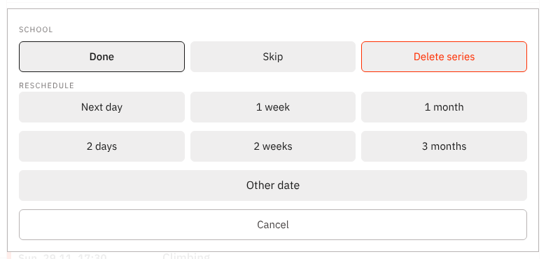
D2 · Danger has four forms
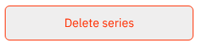
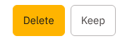
In addition Clear data in this browser (scarlet frame on white) and the view delete (.warn). Amber means attention, not danger.
D3 · Corners outside the measure
Most controls have 6 px, as on the phone. Outliers: 10 px for the view menu, 8 px for a box in the setup, 4 px for journal tags, the DEFAULT badge and the update notice, 2 px for colour swatches. Until 0.9.34 the danger buttons, Other date, the desktop sheet and the week button were square. 0.9.35 gives them 6 px (the sheet 8 px).
D4 · Header on the desktop
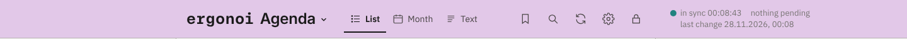
D5 · Side panel differs between phone and desktop
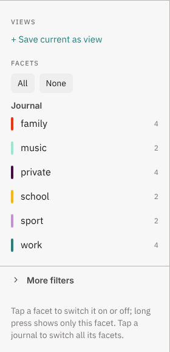
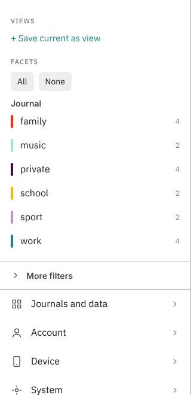
D6 · Date column of the list
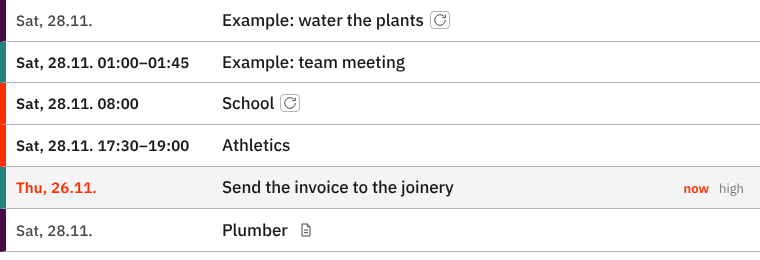
D7 · Detail column
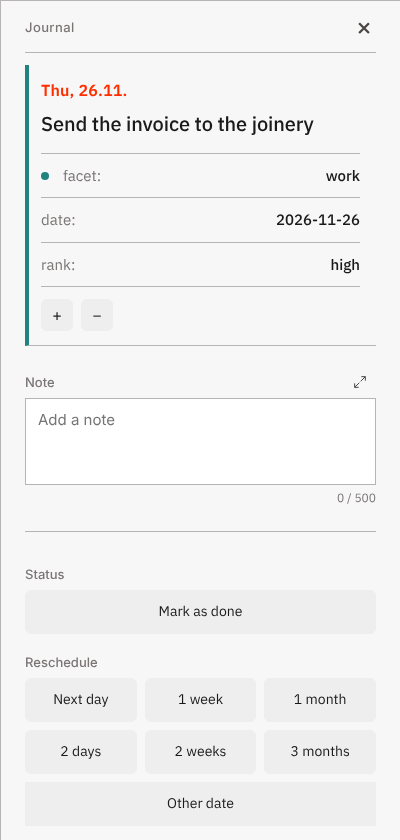
D8 · Month on the desktop
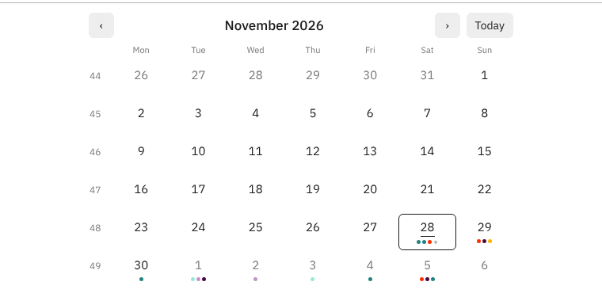
D9 · Settings sections as small framed buttons fixed in 0.9.35
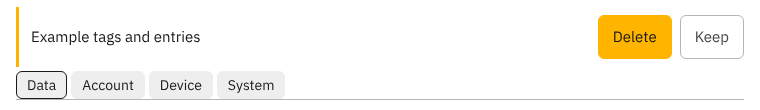
D10 · Sizes and lines
Thirteen type sizes on screen, line widths of 0.5, 1, 1.5, 2, 3, 4 and 6 px without fixed roles, checkboxes in Dark Amethyst, nine button classes (sec, ghost, warn, danger, off, pick, tag, qm, tab), 28 media queries of which several change sizes and colours instead of layout.
15Open decisions
O1 · Scope
Agenda only, or Agenda, Map and the documentation site from the start. The tokens do not depend on the app, but the components of Map (outline, nodes) would need a section of their own.
O2 · Stronger palette
The alternative after the festival poster: Violet #A47DA3, Green #3BAE76, Red #FB6263, Blue #6880B0, with black on light grey. As facet colours all four work as sticks (2.8 to 4.0 : 1 on white), none of them reaches 4.5 : 1 as text. Keep the current facet colours, replace them, or offer the second set per journal.
#A47DA3#3BAE76#FB6263#6880B0O3 · Robin as a stick
Robin #97EAD2 reaches 1.4 : 1 on white and falls below the 1.5 : 1 this contract sets for sticks. Darken it to about #6FD4B8, or accept it as the light end of the set.
O4 · Danger as a text colour
#D42600 instead of Scarlet for overdue, Now and danger buttons. Scarlet stays a facet colour.
O5 · Compact layout
Keep it as an option that reduces space only, or remove it once the default layout follows the contract.
O6 · Desktop sheet
Centred dialog everywhere above 600 px, or, on the desktop, open the detail column instead of the sheet.
AScreenshots 0.9.34
ergonoi theme, light, 28 November 2026. Desktop at 1440 × 900, phone at 390 × 844.
Desktop

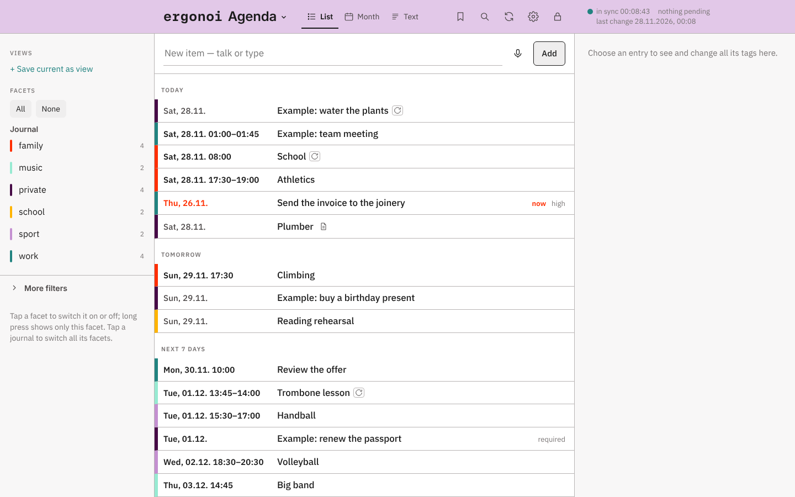
List
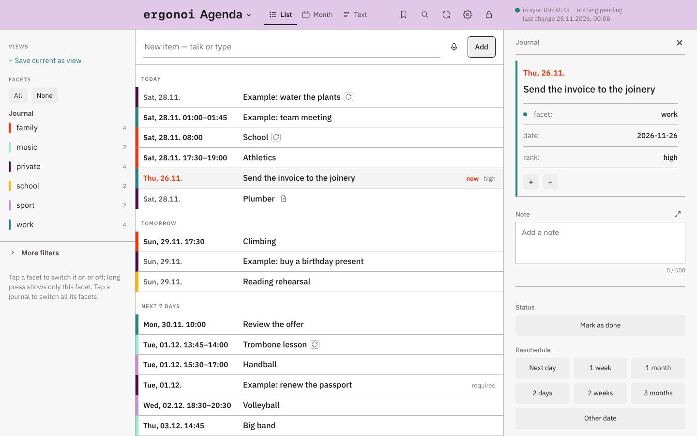
List with detail
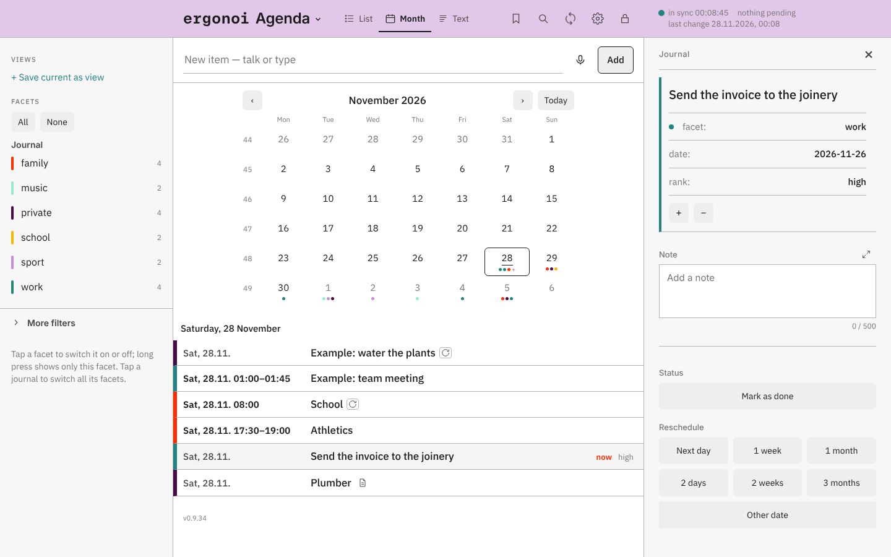
Month
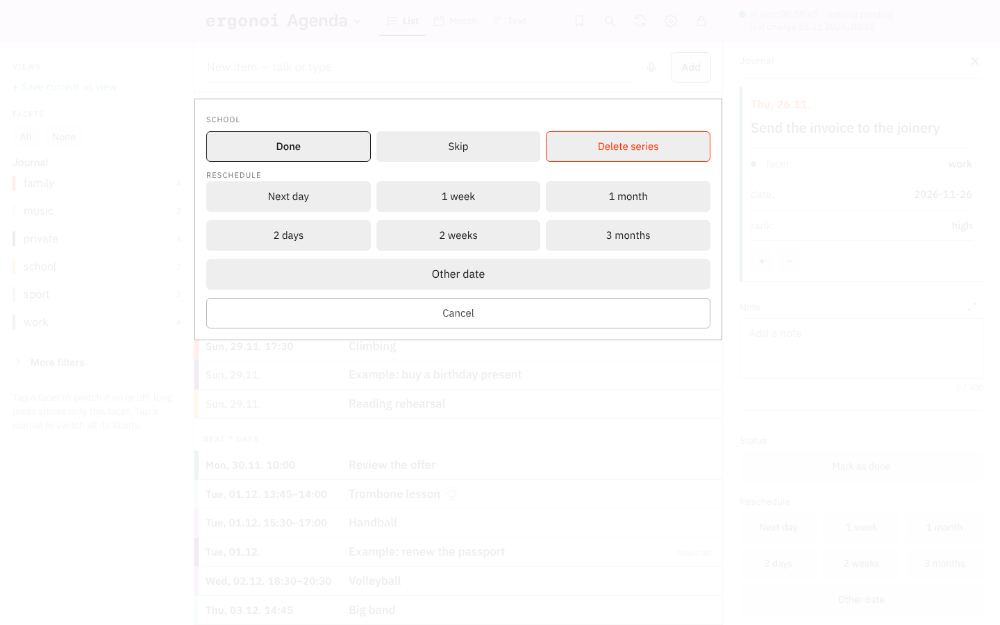
Sheet
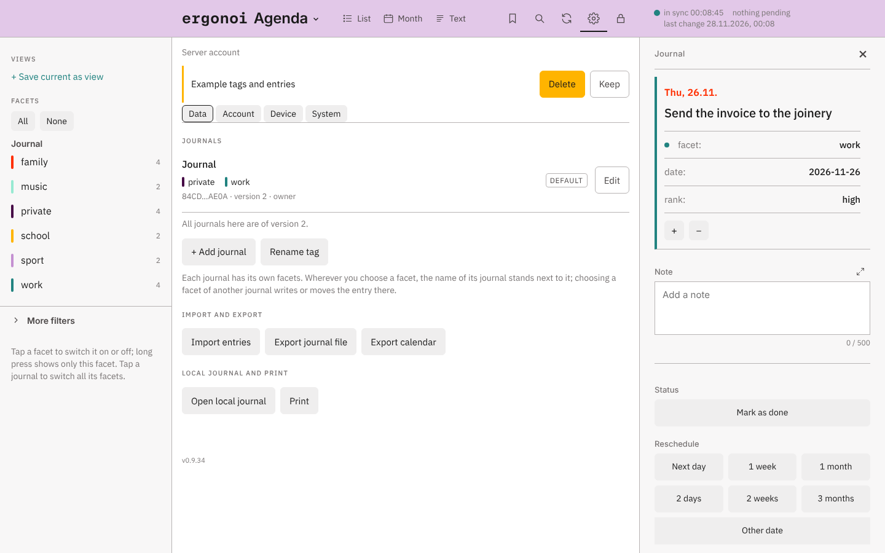
Settings